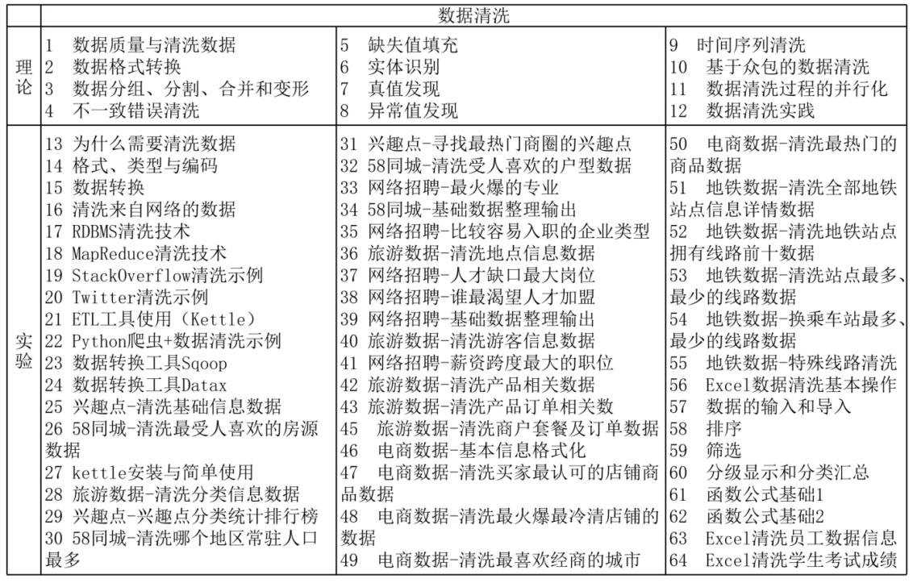
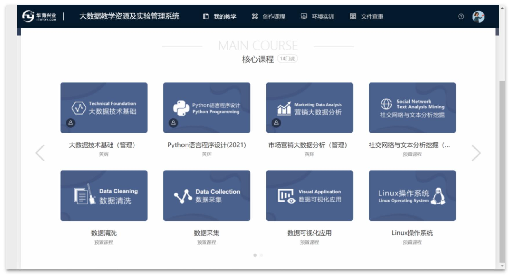
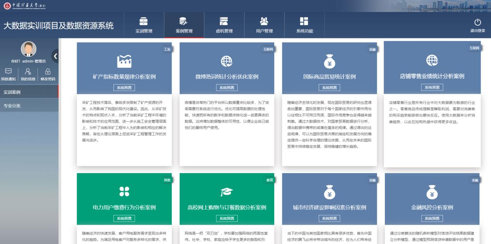
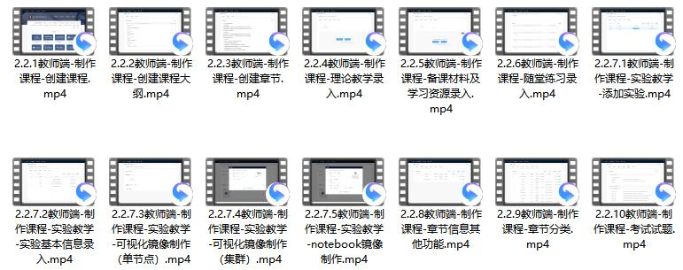
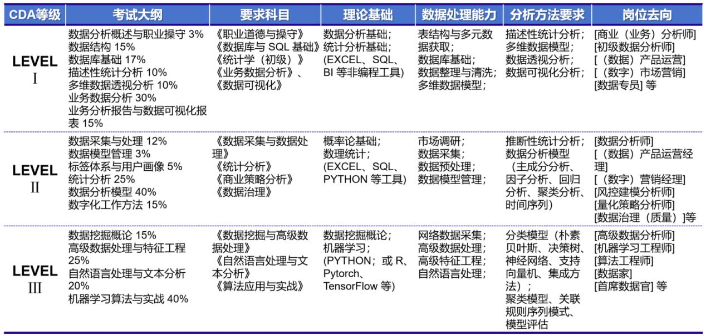
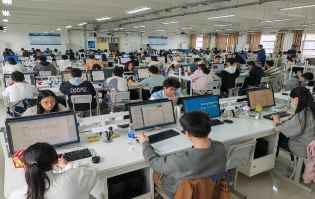
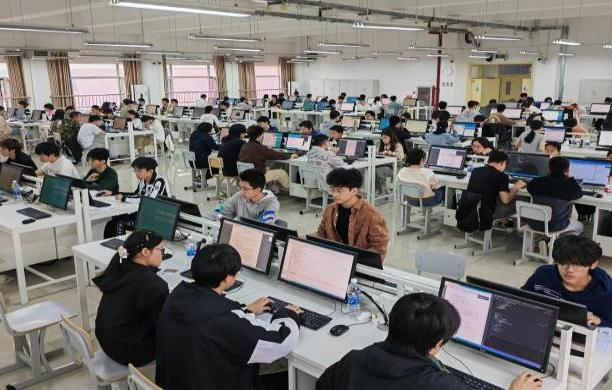
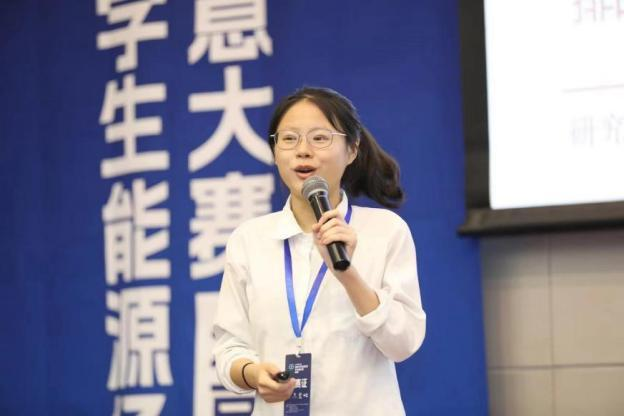
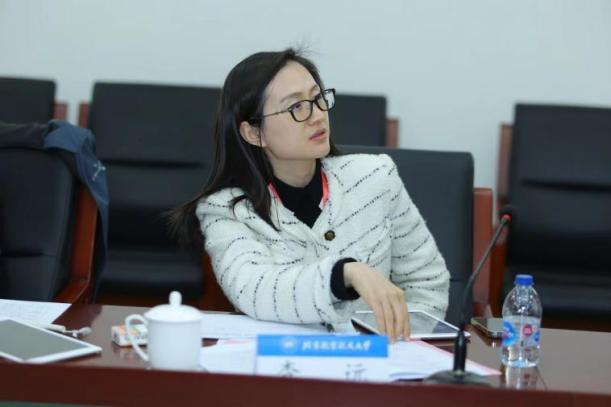
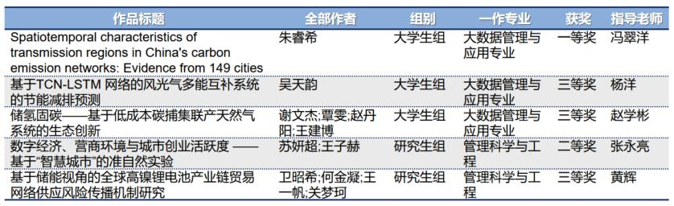

"拓展链"，即建立一系列可以拓展学生大数据知识应用能力的第二课堂相关场景。可划分为三个部分：基本操作实验、专项技能实践、综合能力实训。
第一部分主要通过搭建实验平台开展课内上机教学，巩固所学理论知识，培养基础实验技能；第二部分主要通过引入技能认证资源、开展认识实习，提高数据思维和专业技能；第三部分主要通过各类学科竞赛、创新项目等形式，培养创新意识和对专业技能的综合应用。
建设技术先进、功能完备的大数据实验实训平台是构建课程体系的必要支撑。按照功能集成、资源集优、服务集聚、管理集约的理念，建设覆盖主要行业领域的实训案例库，将教学视频、实训手册等教学资源导入平台，让学生实践完整的数据分析流程。
2021年与甲骨文大数据（中国区）唯一运营商——北京华育兴业科技有限公司达成合作，部署了硬件平台服务器+docker-server+8个96GB内存的docker节点，部署了3个软件平台。该平台中教学实训资源案例十分全面（例如《数据采集与清洗》课程对应的理论和实验资源多达109个），采用脱敏后真实的行业数据，全面覆盖已开设的课程门类。
🖥️ 大数据教学资源及实验管理平台
教师统一管理教学资源，包括设置课程基本信息和教学大纲、编辑章节信息和考试题目、设置并使用实验环境
https://10.9.128.190:8088📊 大数据实训项目及数据资源系统
学生可以体会真实的案例开发环境，实现理论与实践的无缝集成，全景记录教学及学习过程，通过"留痕"精准实现学情分析
https://10.9.128.190:50000



组织学生考取职业资格证书，提高就业竞争力。2023年12月，与广州就学在线科技有限公司达成合作协议，共同申报了"教育部产学合作协同育人项目"。利用CDA教育平台，指导学生有计划地参与和课程实践紧密联系的CDA专业技能认证。
CDA（Certified Data Analyst）数据分析师证书，是面向全球全行业的专业资格认证，已获得中国成人教育协会的认可，是诸多企业的人才评价标准，含金量较高。CDA考试三个等级的考试大纲与本专业课程设置高度契合。
此外，后续将陆续对接PMP国际项目管理师认证、行业数据分析技术认证、大数据工程师等。

以"学赛融合"为指导，通过有组织的让学生参与"互联网+"、"蓝桥杯"等学科竞赛，实现技能提升。以赛促学已成为本专业能力培养的重要路径。
报名人数
参赛率
北京赛区获奖作品
| 届次 | 参赛人数 | 获奖情况 |
|---|---|---|
| 第十三届 | 38人 | 全国二等奖 1项（Python A组） 北京市一等奖 1项 北京市三等奖 1项 杨洋老师获优秀组织个人奖 |
| 第十四届 | 57人 | 北京市二等奖 2项（Python A组） 北京市三等奖 2项（Python A组） 北京市三等奖 1项（Java A组） |
| 第十五届 | 101人报名，94人参赛 | 大数据专业63名同学参赛，2022级参赛率超过55% |


| 作品标题 | 作者 | 组别 | 专业 | 获奖 | 指导老师 |
|---|---|---|---|---|---|
| Spatiotemporal characteristics of transmission regions in China's carbon emission networks: Evidence from 149 cities | 朱睿希 | 大学生组 | 大数据管理与应用 | 一等奖（冲击国赛） | 冯翠洋 |
| 基于TCN-LSTM网络的风光气多能互补系统的节能减排预测 | 吴天韵 | 大学生组 | 大数据管理与应用 | 三等奖 | 杨洋 |
| 储氢固碳——基于低成本碳捕集联产天然气系统的生态创新 | 谢文杰·覃雯·赵丹阳·王建博 | 大学生组 | 大数据管理与应用 | 三等奖 | 赵学彬 |
| 数字经济、营商环境与城市商业活跃度——基于"智慧城市"的准自然实验 | 苏妍超·王子赫 | 研究生组 | 管理科学与工程 | 二等奖 | 张永亮 |
| 基于储能视角的全球高镍锂电池产业链贸易网络供应风险传播机制研究 | 卫昭希·何金凝·王一帆·关梦珂 | 研究生组 | 管理科学与工程 | 三等奖 | 黄辉 |



"实景耦合式"，即以项目为依托，通过让学生跟踪项目全流程，从项目方案的设计到实际项目落地，通过实践让学生自主掌握并在项目中进行课程理论知识和项目实际操作之间的有效衔接，加强理论知识的实际运用，累积项目实践经验。
CDIO是一种国际广泛认可的工程教育模式，代表构思（Conceive）、设计（Design）、实现（Implement）和运作（Operate）。基于CDIO理论，我们将项目分模块耦合进课程中，保持项目进度与知识传授进程同步。
通过一体化项目训练，激发学生的学习兴趣与积极性，培养学生的数据洞察力、逻辑思维能力和分析总结能力。以完整实施一个项目为目标，自学生大二进入专业后，结合大学生创新训练项目，贯穿整个大学学习周期，实现知识与实践的深度融合。